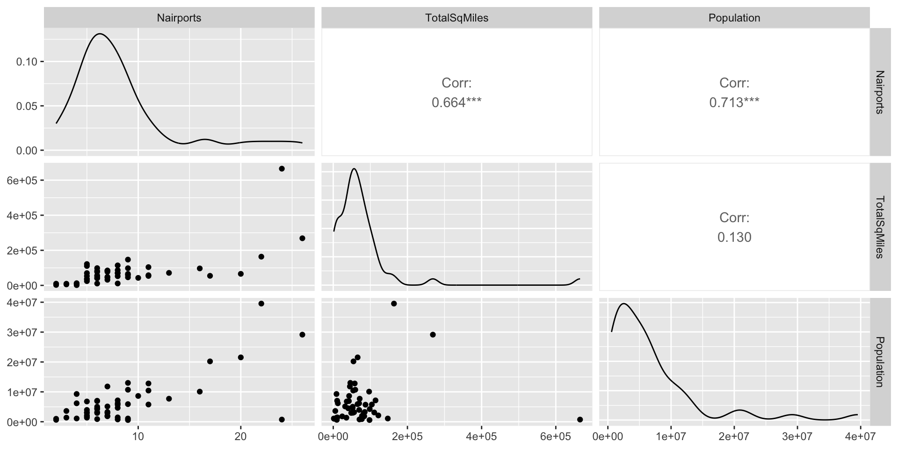
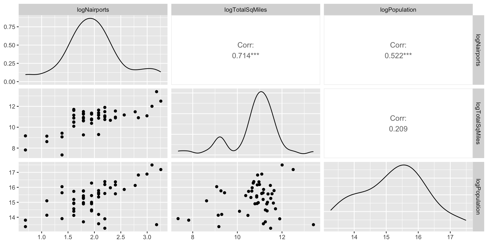

Today, we’ll work with a dataset that includes a large number of assorted variables associated with the 50 U.S. States (including the educational expenditures and SAT information that we worked with in lecture).
The second sheet of the Excel file includes more details about each of the variables in the dataset. Take a few minutes to glance through this dataset.
The syntax for fitting a regression model is:
lm as an objectExample:
Suppose we hypothesize that the number of airports in a state is primarily a function of the size of the state and its population.
There is no printed output from running this code, we have only saved the regression results as a new object in our environment.
To extract the estimated model coefficients, use the coef() function around the lm() output. It can sometimes help to round these values to 3, 4, or 5 decimal points.
The predicted # of airports = 2.99 + 0.00003TotalSqMiles + .0000005Population
A more detailed summary of the model is given by the summary() command. This gives the model coefficients, \(t\)-tests for each coefficient, \(R^2\), adjusted \(R^2\), and the omnibus \(F\)-test.
Call:
lm(formula = Nairports ~ TotalSqMiles + Population, data = dat)
Residuals:
Min 1Q Median 3Q Max
-4.2301 -1.5090 -0.2061 1.1620 5.3398
Coefficients:
Estimate Std. Error t value Pr(>|t|)
(Intercept) 2.988e+00 4.624e-01 6.462 5.36e-08 ***
TotalSqMiles 3.180e-05 3.215e-06 9.891 4.56e-13 ***
Population 4.562e-07 4.208e-08 10.842 2.21e-14 ***
---
Signif. codes: 0 '***' 0.001 '**' 0.01 '*' 0.05 '.' 0.1 ' ' 1
Residual standard error: 2.172 on 47 degrees of freedom
Multiple R-squared: 0.8403, Adjusted R-squared: 0.8335
F-statistic: 123.7 on 2 and 47 DF, p-value: < 2.2e-16The omnibus \(F\) test is significant, and each coefficient is significantly different than zero according to the \(t\)-tests. The multiple \(R^2 = .8403\) (adjusted = .8335), indicating very high predictive accuracy.
The result on the previous slides may seem a little strange in that both the coefficient for TotalSqMiles and the coefficient for Population are nearly zero. This has to do with the scale of the variables.
scale() function. (Intercept) scale(TotalSqMiles) scale(Population)
0.0000 0.5814 0.6374
Call:
lm(formula = scale(Nairports) ~ scale(TotalSqMiles) + scale(Population),
data = dat)
Residuals:
Min 1Q Median 3Q Max
-0.79474 -0.28350 -0.03871 0.21832 1.00323
Coefficients:
Estimate Std. Error t value Pr(>|t|)
(Intercept) 3.612e-17 5.770e-02 0.000 1
scale(TotalSqMiles) 5.814e-01 5.878e-02 9.891 4.56e-13 ***
scale(Population) 6.374e-01 5.878e-02 10.842 2.21e-14 ***
---
Signif. codes: 0 '***' 0.001 '**' 0.01 '*' 0.05 '.' 0.1 ' ' 1
Residual standard error: 0.408 on 47 degrees of freedom
Multiple R-squared: 0.8403, Adjusted R-squared: 0.8335
F-statistic: 123.7 on 2 and 47 DF, p-value: < 2.2e-16The model fit (\(t\)-tests, omnibus \(F\)-test, \(R^2\), adjusted \(R^2\)) is identical to the unstandardized model, the only difference is that the coefficients are on a standardized scale.
Let’s now do what we should have done in the first place - explore the data graphically! A “pairs plot”, or scatterplot matrix, is particularly useful for this purpose. The ggpairs() function in the GGally package allows us to do this.

All variables have high positive skew!
There are some outliers, and potential nonlinearities in these data. Perhaps if we take the natural logs of Nairports, TotalSquareMiles and Population, these variable will be more linearly related.
Then, make the pairs plot again:

Not only does the skewness of our variables change, but the correlations among the variables also change when taking logs (this will happen with any nonlinear transformation).
Let’s next fit the model with the transformed variables.
Call:
lm(formula = logNairports ~ logTotalSqMiles + logPopulation,
data = dat)
Residuals:
Min 1Q Median 3Q Max
-0.58033 -0.23730 -0.03901 0.17861 0.78330
Coefficients:
Estimate Std. Error t value Pr(>|t|)
(Intercept) -4.65013 0.77839 -5.974 2.95e-07 ***
logTotalSqMiles 0.31700 0.04390 7.220 3.79e-09 ***
logPopulation 0.21129 0.04756 4.442 5.38e-05 ***
---
Signif. codes: 0 '***' 0.001 '**' 0.01 '*' 0.05 '.' 0.1 ' ' 1
Residual standard error: 0.3333 on 47 degrees of freedom
Multiple R-squared: 0.6549, Adjusted R-squared: 0.6402
F-statistic: 44.6 on 2 and 47 DF, p-value: 1.385e-11Notice that the multiple \(R^2\) is now much lower. All 3 estimated regression coefficients have also changed substantially.
Even though \(R^2\) is lower, this model may be preferable (e.g., more generalizable) than the previous model.
Part of the reason why has to do with the effects of outliers, which we’ll focus on next week.
We should also consider model assumptions before trusting these results too much (also next week).
For another example, let’s explore what happens when we use categorical variables as IVs. In the dataset, there are three dummy-coded variables (RegionNortheast, RegionSouth, and RegionNorthCentral corresponding to four regions of the U.S (Northeast, South, NorthCentral, and West).
First, run the following to create a new factor-type variable named Region.
The lm() function automatically implements dummy coding when it detects a categorical variable! Just make sure you know what the reference category is.
Call:
lm(formula = HighestElevation ~ Region, data = dat)
Residuals:
Min 1Q Median 3Q Max
-3453 -1239 -389 1045 6426
Coefficients:
Estimate Std. Error t value Pr(>|t|)
(Intercept) 2828.2 622.9 4.540 4.04e-05 ***
RegionNortheast 838.0 951.5 0.881 0.383
RegionSouth 969.8 824.0 1.177 0.245
RegionWest 11055.9 863.8 12.799 < 2e-16 ***
---
Signif. codes: 0 '***' 0.001 '**' 0.01 '*' 0.05 '.' 0.1 ' ' 1
Residual standard error: 2158 on 46 degrees of freedom
Multiple R-squared: 0.8311, Adjusted R-squared: 0.8201
F-statistic: 75.46 on 3 and 46 DF, p-value: < 2.2e-16
Call:
lm(formula = HighestElevation ~ RegionNorthEast + RegionSouth +
RegionNorthCentral, data = dat)
Residuals:
Min 1Q Median 3Q Max
-3453 -1239 -389 1045 6426
Coefficients:
Estimate Std. Error t value Pr(>|t|)
(Intercept) 13884.1 598.5 23.20 < 2e-16 ***
RegionNorthEast -10218.0 935.7 -10.92 2.3e-14 ***
RegionSouth -10086.1 805.7 -12.52 < 2e-16 ***
RegionNorthCentral -11055.9 863.8 -12.80 < 2e-16 ***
---
Signif. codes: 0 '***' 0.001 '**' 0.01 '*' 0.05 '.' 0.1 ' ' 1
Residual standard error: 2158 on 46 degrees of freedom
Multiple R-squared: 0.8311, Adjusted R-squared: 0.8201
F-statistic: 75.46 on 3 and 46 DF, p-value: < 2.2e-16Because our only IV is discrete with 4 cateogries, we might instead think to run an ANOVA.
A one-way ANOVA predicting the highest elevation by region is identical to a regression model on dummy variables. To see, why let’s run both models.
Df Sum Sq Mean Sq F value Pr(>F)
Region 3 1.054e+09 351351539 75.46 <2e-16 ***
Residuals 46 2.142e+08 4656250
---
Signif. codes: 0 '***' 0.001 '**' 0.01 '*' 0.05 '.' 0.1 ' ' 1The \(F\) test for the main effect of region in the ANOVA is identical to the omnibus \(F\) test in the regression model!
The main “difference” (not a real difference) between the two models is how the results are analyzed. ANOVA models mostly focus on proportion of variance explained, while regression models put more emphasis on regression coefficients.
In the fitted regression model,
Predicted highest elevation = 2828.2 + 838 \(\times\) NorthEast + 969.8 \(\times\) South + 11055.9 \(\times\) West
NorthCentral (reference category)NorthEastSouthWestIt is good to double check that what we are doing makes sense, even if it is something pretty simple.
Here are the means calculated from the data, which matches the model-predicted averages: